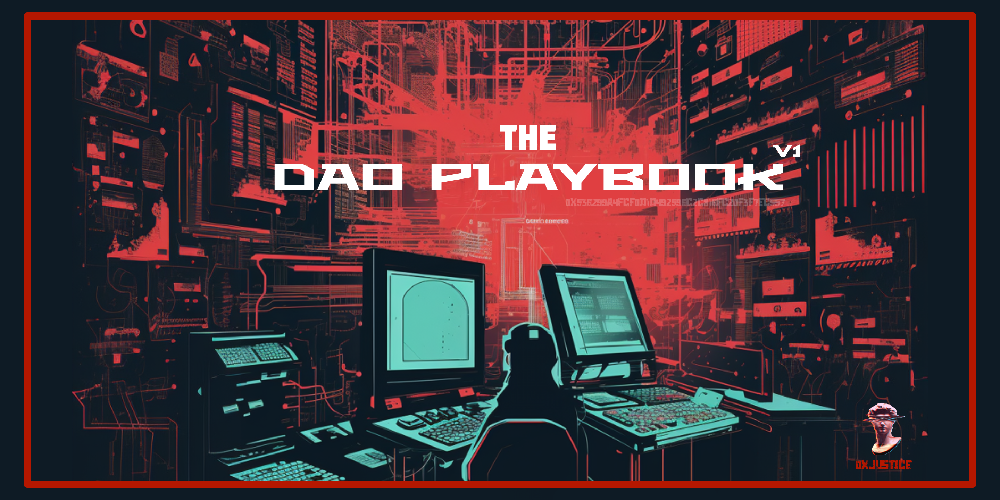
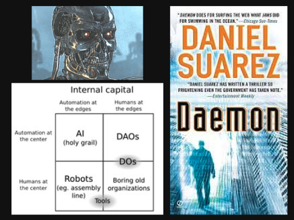
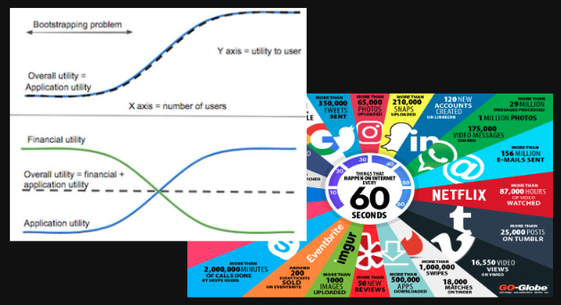
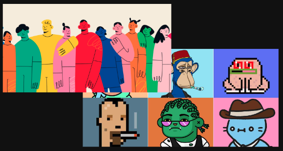
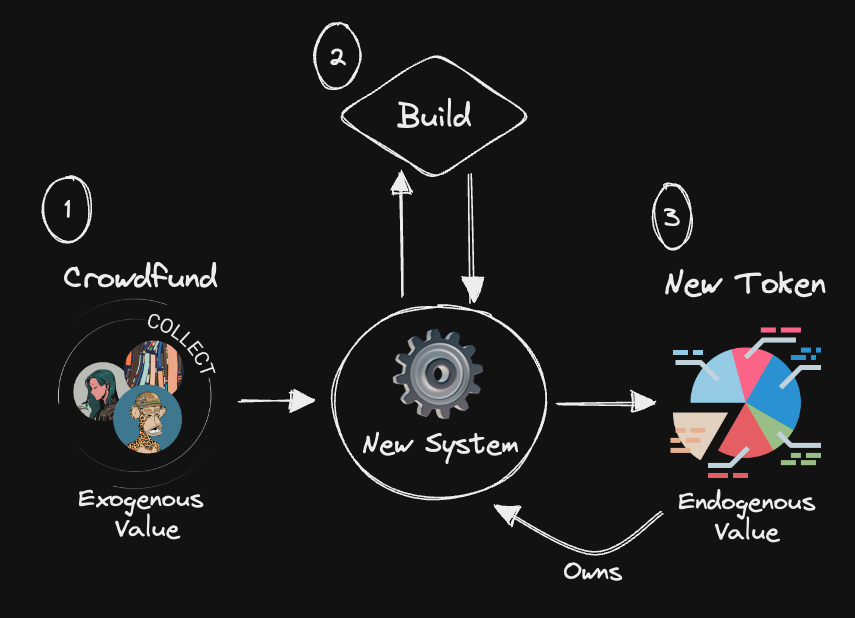
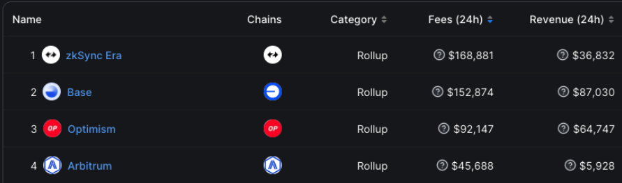
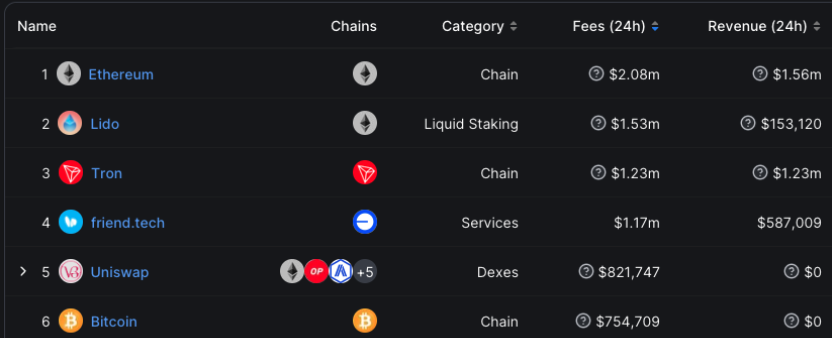

The DAO Playbook (v1)
Originally published at https://paragraph.com/@0xjustice/the-dao-playbook-v1

There’s a lot of talk about DAOs and what they could be in the future but very little writing about how to actually launch one. This absence is partly because the subject is nascent but also because it's hard to separate the substance from the hype. No one wants to admit their DAO is terrible and not working. I hope to buck that trend.
This post is the first in a series of articles documenting my growing and evolving understanding of "How to DAO." I won't claim that my views or recommendations are authoritative, but I promise to be as transparent and honest as possible. Don't be misled. The DAO problem is not solved, but it won't advance if practitioners and proponents stay in permanent evangelist mode.
In this first post, I'll talk about what DAOs are, what they are good at, and how they make money. To get a much broader context of the significance of DAOs and where they fit into history, read this piece:
https://operator.mirror.xyz/V9C2mgThFHKY9bt73Wt98ZGG1reM7KL8wyf6_41Yf8k
DAOs Defined
In the most fundamental sense, a DAO is a smart contract that allows people to own and control digital assets collectively. This definition encompasses everything from a two-person multi-signature wallet to a hundred-person token-weighted governance system to a ten thousand-person DAO utilizing delegates. The fundamentals are the same.
While this is the essence of a DAO, a particular DAO's flavor and focus can be radically diverse. I won't spend the time listing all the DAO archetypes like collector, social, protocol, etc. You can find that online. I will, however, describe a few distinct mental models of what people believe DAOs to be one step above this base definition. While not mutually exclusive, these mental models produce different expectations of what people think DAOs should be good or bad at.
Digital Companies
The first way to look at DAOs is as purely digital organizations. Aragon defines them as "organizations run with smart contracts on a public blockchain." Seen in this way, they do for business what Bitcoin did for finance. They enable disintermediated collective ownership and action governed by code. This view was the earliest mental model originating from Dan and Stan Larimer and referred to as Decentralized Autonomous Companies (DACs). Seen from this vantage point, DAOs upgrade boardrooms to the digital realm. Read more about DACs here.

Autonomous Apps
Another way to look at a DAO is as a decentralized application with internal capital it deploys to advance its development. Seen in this way, a DAO is a piece of software that accrues value and then spends that value for its preservation and improvement. It pays humans to do things it can not. This view was popularized by Vitalik and inspired by the Daemon sci-fi book series. The most famous example of this type is imagining the replacement of Uber corporate with decentralized open-source software.

Decentralized Platforms
A third way of viewing DAOs is as Internet platforms with governance. This view was popularized by Chris Dixon and motivated by the fact that the internet, while initially intended to be decentralized, has been significantly captured by corporations and centralized platforms. DAOs remedy this situation by redistributing ownership to users who can set the platform's rules and employ democratic means of determining moderation and pricing.

Internet Communities
Lastly, and probably the most popular way to view DAOs is as tokenized internet communities. This perspective encompasses social and investment clubs and has been famously described as "communities with a shared cap table and bank account" by Cooper Turley. This model embodies the community-first ethos and rests on the idea that a group can pool funds for a common purpose to tremendous benefit in previously impossible ways.

With this definition and a few popular mental models, let's move on to what is and is not working in DAOs. The temptation is to argue about what they can or will be able to do in the future, but this is to slip back into evangelist mode—something we will avoid for now.
DAO Strengths
DAOs are great at three things: raising money, deploying money, and creating money. There is a big catch in that second activity, but let's get into each of these and understand how each is visible in the market.
Raising Money
DAOs are great at raising money partly because you can grant governance rights over the collected assets. Ask a hundred strangers to send you money online, and you'll get mixed results. Ask the same people, but give them a token representing rights over the accrued money, and you get things like Constitution DAO raising $47M.
This dynamic is powerful. There are around two billion people worldwide for whom $1 is a small amount of money. This means you could raise two billion dollars any day using crypto fundraising methods. We see this is most demonstrated by NFTs and PFPs in particular. Most people buy NFTs with an expectation of profit through intellectual property BD, or some future product holders expect the founding team to build.
The regulatory sidestep is obvious. Crowdfunding is regulated and platform-specific. NFTs are not. PFPs also have the added benefit of signaling to everyone online that you are part of a specific movement. They imbue the community-first maxim. You may not understand NFTs until you see them as the new ICO.
Areas for improvement include better use of actual DAO tooling. It's unbelievable that many of these supposedly community-first NFT projects pool funds in individual founders' wallets and don't employ any kind of community governance. A killer upgrade would be a combination of Mirror and DAOhaus, where projects get funded from a Mirror post, and funders get a claim on the project in the form of loot shares.
Deploying Money
I'll skip to the chase. DAOs don't build very well. We should expect this weakness. Why would we assume the masses who pooled funds are the same academics, scientists, and engineers necessary to build complex protocols? It's a ridiculous presumption. This contradiction made me hostile to the community-first DAO approach until I realized the trick.
DAOs may not excel in operations and execution, but nothing says they can't outsource these activities to builders. This maneuver is, in fact, the exact thing they do. It's evidenced by the existence of traditionally organized development units typically designated "Labs" in the name. Optimism, Arbitrum, Polygon, etc all have a dedicated engineering group separate from their DAO and Foundation org units.
You see the challenge (building internally) and the solution (outsourcing), but another difficulty exists. Assuming the DAO has no legal standing, who is the counterparty in the building contract? Someone is commissioning the lab's entity to work, and it's this entity that has recourse if they don't do the job. I suspect this is partly the function of the foundation that usually accompanies the DAO and the lab's entities.
Areas for improvement in DAO ops and execution include reputation systems, commitment contracts, and more capable role management. The latter is what Hats Protocol aims to do and why people are so excited about it. I’ve written about how to operation segment stakeholders to this end here:
https://operator.mirror.xyz/iWSuHkhJt2M9W0rAzBwfUoyrYRtcJ6v7QI3SnHBlVvc
Creating Money
The third major utility of DAOs is the token launch or what you call the crypto-flavored IPO. This action starts with some system of value and then distributes control over that system to the public as a token. This approach is "protocol-first" or an "exit to community." The most visible manifestation of this approach is layer one chains and Defi applications.
It works because protocols are developed systems that can drive a token's appreciation. You have a solid foundation for token value when combined with a grants program, protocol governance, staking rewards, and any protocol utility. Read more about the protocol-first approach here:
https://operator.mirror.xyz/MBNHkLf0s-NPRty1gAsf1OrJji28JL3DfDCC7tACBW4
The regulatory side steps employed in this maneuver are apparent. Companies can't IPO without permission from securities regulators, so they mitigate this restriction in two ways. First, they airdrop tokens, so no "investment" is made by holders. Secondly, they design the protocol to transfer critical decisions and control to token holders. In this way, projects demonstrate sufficient decentralization, which is the primary mechanism of navigating securities requirements in Web3.
Value-Machine Theory
I struggled to determine which of the above activities was the "right" way to DAO until I realized that sequentially chaining the activities may be the ideal path and reveal a generalized explanation for how all new systems come to exist. Consider the progression.
You raise money through a PFP and deploy that money to build something holders want, then do a token launch that transmits control of said platform to the public. It's similar to what we already do in the non-crypto world. This observation convinces me more that it's the right path. It reflects a kind of reproductive life cycle for valuable systems where one tokenized system begets another.

DAOs Monetized
We've looked at DAO strengths; let's now ask the most mysterious question. How does any of this make money? The answer is not so straightforward.
Challenges
People speak of the economic moat of a business. A moat is what prevents someone from copying and doing the same thing you are doing and subsequently eating your margins. This question is hypercharged in blockchain because all code is visible and forkable. Not only can someone do what you're doing, they can take all the work you've done and use it as their own anonymously. Let's briefly look at three options and the thesis that back them.
Hyperstructures
Jacob Horne, the cofounder of Zora, penned an essay called Hyperstructures in January 2022 that galvanized imaginations on what protocols should or could be. He presented the novel and unintuitive idea blockchain protocols could appreciate and run at cost. He called these new structures hyperstructures and defined them as "Crypto protocols that can run for free and forever, without maintenance, interruption or intermediaries."
According to Jacob, one of the mechanisms that make this possible is the presence of a fee switch. The idea is that token holders can vote to turn on fees anytime, but platform users possess a counter-desire to avoid paying fees. This tension creates buying pressure in a war for control, thus appreciating the token.
It's deep, and there's nuance to the argument that's beyond the scope of this post, but you get the idea. The Hyperstructure theory answers the protocol monetization question by saying you don't need to charge fees if you can get enough users and utility around a token to drive appreciation.
Brand & Network
A counterargument to the Hyperstructures thesis comes from Connor McCormick. In his article No. Hyperstructures cannot be valuable-to-own and free, Connor argues that protocols can't be free and valuable to own. He extrapolates and meticulously dissects the six distinct arguments embedded in Jacob's original post. We won't go through each rebuttal here, but the following general possibility emerges:
> Feeless protocols are merely in the earlier stages of a standard Web2 platform play.
Today's biggest Internet platforms employ this very strategy. They are free and only make money once they possess near monopolistic network effects, and then they add monetization properties. This strategy answers the moat question by questioning the assumption that anyone can fork your work and commercially leverage it effectively. Forking code doesn't fork brand trust, users, or the delivery team.
People point to the NFT marketplaces Opensea and Blur as examples of the race to the bottom on fees. But even given Blur's little to no fees, Opensea is still a massively successful and profitable brand. Judge for yourself. This explanation is compelling because it doesn't require us to adopt a novel form of economics and because it builds on existing growth strategies.
Listen to Connor's friendly debate with Owocki on the Greenpill podcast to dive deeper: Finding a Business Model for HyperStructures with Connor McCormick.
Layer 2s
The last monetization strategy we'll look at is L2 scaling solutions. Baselayer blockchains (L1s) like Ethereum charge gas fees with every transaction. They have finite backspace, so demand drives gas fees exorbitantly high. Layer-twos (L2s) solve this by packaging transactions together before settling on lower L1 chains. This approach works until demand for backspace makes prices high again. The only way to have unlimited backspace is to have unlimited L2s. This is where the App-Chain Thesis is relevant.

From a monetization standpoint, L2s are interesting because you can charge arbitrary fees above what the underlying L1 requires in the form of sequencer fees. Add to this the fact that all significant L2s are launching Rollup-as-a-service (RaaS), and you have a recipe for monetization and unlimited block space. The Base chain from Coinbase is an excellent example of this monetization. Launched on top of the Optimism stack, it generates fees and hosts one of the most profitable apps, Friend.tech, which generates ~$587k in revenue daily at the time of this writing. This example would suggest a validation of the L2 and "Brand & Network" monetization theory.

https://defillama.com/fees
The L2 answer does beg the question. As with the contracts, what stops someone from launching a competing L2 with the same contracts but with lower fees? Are we right back to where we started? I don't have a great answer for this. Time will tell.
Conclusion
DAOs are not a business. They're mechanisms for collective ownership and management. Starting a DAO is as much of a business plan as opening a shared bank account. DAOs are great at raising capital, deploying that capital, and subsequently issuing capital interest in a built system. This much is clear. What is far less clear is what kind of innovative systems can and should be built.
For all of our talk of designing a new future, Web3 innovation at the app layer is minimal. Saying we're in an infrastructure phase is also questionable and may be copium. Aggregation theory suggests a strong winner-take-all pattern to internet platforms, so the challenge to achieve any significant adoption relative to Web2 platforms is staggering. Read David Phelps's essay, The Proto-App Thesis, to dive deeper into this topic. So, where does this leave us? What's the play for DAOs today?
It's not entirely divorced from the traditional Lean Startup playbook. Start by validating user demand with a scrappy prototype. This next step is where things take on new significance. Rather than turning to VCs, leverage the growing number of people already adopting your app. This context is the fertile ground for a PFP collection. Ideally, you'll do this with onchain governance so that holders ultimately decide how to deploy the accrued assets.
From this accrued capital, iterate over product improvements and step through predetermined growth milestones. From here, you can begin to articulate a token launch strategy. Ideally, the token should include platform utility and indirect appreciation through a bonding curve or rage quit. As the app matures, add a grants program and an expansion mechanism to allow people to build on top of your app. Read this to understand this last part:
https://banklessdao.mirror.xyz/QQA6ZhvHtDefWEAT-SXaHYPYMtHUhshtXX5dY-gv0u8
Is any of this easy? No. But neither was the old way of raising funds from accredited investors and hopefully IPO'ing 5-10 years later. What it is is fast and programmable. You can run the DAO playbook in months, not years, and the world is your TAM.
Is this legal? Who knows. Your risk tolerance will determine which route you take. You can restrict participation and employ legal wrappers or be highly rigorous in decentralizing decision-making by exclusively utilizing onchain tooling. Many people in Defi are anonymous, beyond the larp of it, for this reason. Today's modus operandi is tomorrow's Wells Notice.
All of the views expressed in this article are exclusively my own. None of this is legal or financial advice. Do your own research. Here are several resources from Paradigm, Aragon, MiDAO, and a16z to familiarize yourself with the legal options for DAOs.
Originally published on 0xJustice.eth